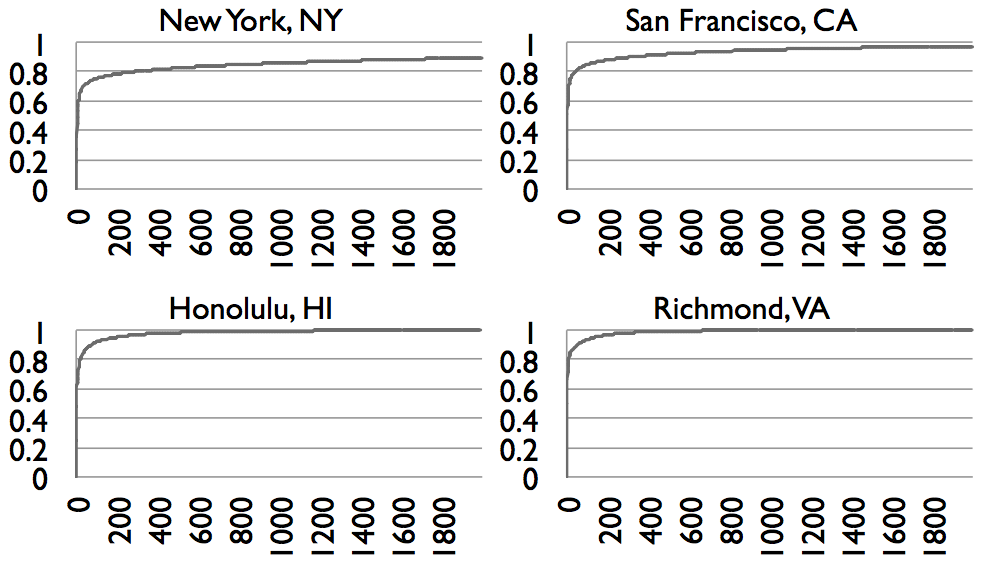

the 500 most popular location terms in New York
account for about 82% of all
 Volume Across Cities
Volume Across Cities150 million tweets from Los Angeles
an average of about 400,000 a day.
Keywords
images too
JS+CSS github.com/ tmcw/ big
Volume Across Cities